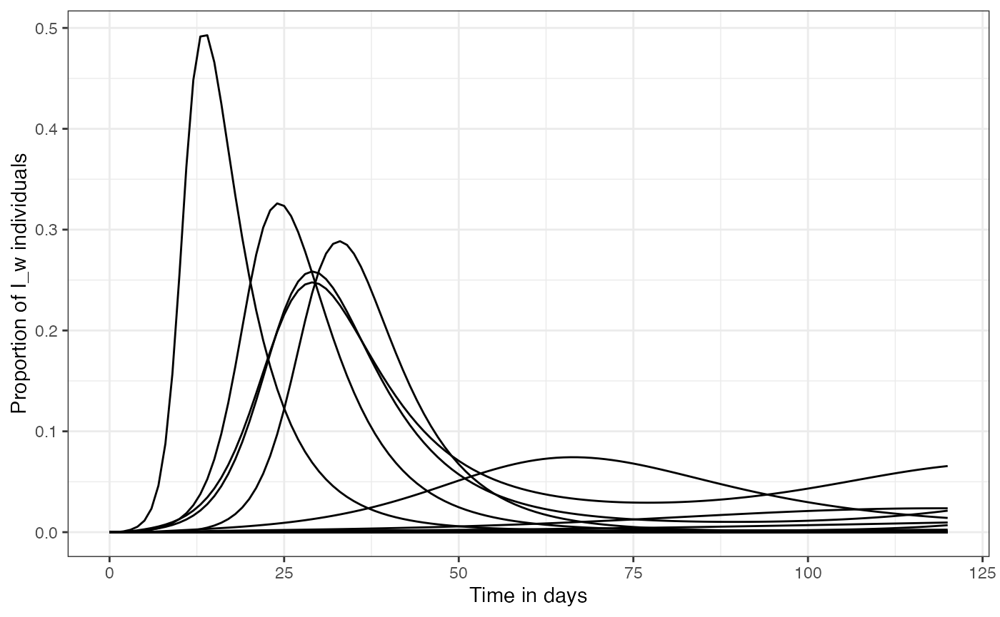
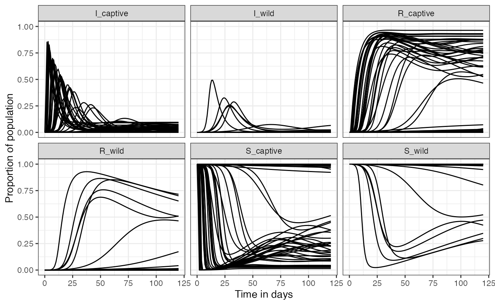

As a first example, we will use the defaults for all the values, and run one projection of the SIRS model. These defaults are produced as random draws from the expert elicitation data.
First, load the data, and generate a random sample for each of the parameters:
set.seed(23)
nsamples <- 50
elicitation_data <- whitetailedSIRS::elicitation_data
# bind samples to the elicitation df
elicitation_data %>%
# create a random sample using the parameters depending on the specified distribution
mutate(my_sample = if_else(family == "log-normal",
pmap(list(mu, sd), function(mu, sd) rlnorm(nsamples, mu, sd)),
pmap(list(mu, sd),
function(mu, sd) greybox::rlogitnorm(nsamples, mu, sd)))) -> elicitation_dataWith the previous code we generated a sample of 50 values for each of
the parameters elicited, using the appropriate distribution. We will use
some of those parameters now to calculate our transmission terms and
other parameters that go into the SIRS model. The
elicitation_data object is a tibble, and the sample of
values for each parameter is a vector of values within each cell of the
tibble for the my_sample column:
slice_head(elicitation_data, n = 5)
#> # A tibble: 5 × 5
#> parameter mu sd family my_sample
#> <chr> <dbl> <dbl> <chr> <list>
#> 1 Temporary Immunity 4.72 0.626 log-normal <dbl [50]>
#> 2 Wastewater Infections -1.35 1.49 log-normal <dbl [50]>
#> 3 Fomite Infections -0.0414 1.03 log-normal <dbl [50]>
#> 4 Viral Load 0.216 0.344 log-normal <dbl [50]>
#> 5 Dose-Response 0.277 0.272 log-normal <dbl [50]>We write a short helper function to help us extract each of the
vectors in the my_sample column, so these can be assigned
to the different parameters:
get_param_val <- function(my_param){
elicitation_data %>%
filter(parameter == my_param) %>%
unnest(cols = c(my_sample)) %>%
pull(my_sample)
}We set up all the parameters that were generated from the expert elicitation distributions:
# The immunity parameter that goes into the SIR is the reciprocal to what was elicited
alpha_immunity <- 1 / get_param_val('Temporary Immunity')
# Calculate contact rate between wild deer using the contact_rate fx using defaults:
c_ww <- whitetailedSIRS::calc_contact_rate(nsamples = nsamples)
# The rest of the contact rates were elicited and then modified
c_cw <- 0.00072 / get_param_val("Direct Contact Probability")
c_cc <- get_param_val("Deer-Deer Proximity Rate, Captive (per day)")
c_hw <- get_param_val("Deer-Human Proximity Rate, Rural (per 120 days)") / 120
c_hc <- get_param_val("Deer-Human Proximity Rate, Captive (per 120 days)") /120
# time or duration of these contacts was also expert elicited:
t_contact_deer_deer <- get_param_val("Deer Proximity Duration (minutes)")
t_contact_deer_human_rural <- get_param_val("Deer-Human Proximity Duration, Rural (minutes)")
t_contact_deer_human_capt <- get_param_val("Deer-Human Proximity Duration, Captive (minutes)")
# Viral load proportional to human value:
C_nu <- 10^5.6 * get_param_val("Viral Load")
# Dose response
r_deer <- get_param_val("Dose-Response")
# Direct contact probability:
sigma_dc_wild <- get_param_val("Direct Contact Probability")
sigma_dc_captive <- get_param_val("Direct Contact Probability")Using the sets of parameters from expert elicitation we calculate
probability of infection via aerosol and direct contact. These
calculations are also informed by parameters from the literature, and
details on this can be found in the sir_model_description
document/article.
# aerosol
nu_aero_deer_deer <- calc_nu_aero(C_nu = C_nu,
t_contact = t_contact_deer_deer / 60,
r = r_deer)
nu_aero_deer_human_rural <- calc_nu_aero(ER = rep(0.53, nsamples), C_nu = C_nu, t_contact = t_contact_deer_human_rural/60, r = r_deer)
nu_aero_deer_human_capt <- calc_nu_aero(ER = rep(0.53, nsamples), C_nu = C_nu, t_contact = t_contact_deer_human_capt/60, r = r_deer)
# direct contact
nu_dc_deer_deer <- calc_nu_dc(C_nu = C_nu)Now that we have all the parameters we need, we can set up the inputs
for the ode() function:
list_inits <- list(
S_wild = rep(1, nsamples),
I_wild = rep(0, nsamples),
R_wild = rep(0, nsamples),
S_captive = rep(1, nsamples),
I_captive = rep(0, nsamples),
R_captive = rep(0, nsamples)
)
list_params <- list(
alpha_immunity = alpha_immunity,
beta_aero_ww = c_ww * nu_aero_deer_deer,
beta_aero_cw = c_cw * nu_aero_deer_deer,
beta_aero_cc = c_cc * nu_aero_deer_deer,
beta_aero_hw = c_hw * nu_aero_deer_human_rural,
beta_aero_hc = c_hc * nu_aero_deer_human_capt,
beta_dc_ww = c_ww * sigma_dc_wild * nu_dc_deer_deer,
beta_dc_cw = c_cw * sigma_dc_wild * nu_dc_deer_deer,
beta_dc_cc = c_cc * sigma_dc_captive * nu_dc_deer_deer,
phi_cw = rep(0, nsamples),
phi_wc = rep(0, nsamples),
gamma_recov = rep(1/6, nsamples),
I_human = rep(0.05, nsamples)
)
times <- seq(0, 120, by = 1)We continue to work with list columns here so we can keep track of the sets of parameters associated to each of the projections:
# create list column to store inits and params
mytibble <- tibble(run_id = 1:nsamples,
inits = map(run_id, ~ list_inits %>% map_dbl(., .x)),
params = map(run_id, function(x) list_params %>% map_dbl(., x)))
# create a new column that stores the results from the ode() projection
mytibble %>%
mutate(ode_proj = pmap(list(y = inits, parms = params), ode, times = seq(0, 120, by = 1), func = simple_sirs)) %>%
# now create another column that stores the equilibrium for these:
mutate(steady_state = pmap(list(y = inits, parms = params), runsteady, func = simple_sirs)) -> sirs_results # save as new object
slice_head(sirs_results, n = 3)
#> # A tibble: 3 × 5
#> run_id inits params ode_proj steady_state
#> <int> <list> <list> <list> <list>
#> 1 1 <dbl [6]> <dbl [13]> <deSolve [121 × 7]> <named list [1]>
#> 2 2 <dbl [6]> <dbl [13]> <deSolve [121 × 7]> <named list [1]>
#> 3 3 <dbl [6]> <dbl [13]> <deSolve [121 × 7]> <named list [1]>From our results we can visualize the proportion of infected individuals over time for each of the runs:
# get results in proper format:
sirs_results %>%
mutate(ode_df = map(ode_proj, as.data.frame)) %>%
pull(ode_df) %>%
list_rbind(names_to = "run_id") -> ode_df
ode_df %>%
ggplot(., aes(x = time, y = I_wild, group = run_id)) +
geom_line() +
labs(x = "Time in days", y = "Proportion of I_w individuals") +
theme_bw()
We can also take a look at how all compartments change over time:
ode_df %>%
pivot_longer(cols = -c(run_id, time), names_to = "compartment") %>%
ggplot(., aes(x = time, y = value, group = run_id)) +
facet_wrap(~compartment) +
geom_line() +
labs(x = "Time in days", y = "Proportion of population") +
theme_bw()
And check the steady state, or equilibrium, for all of these runs:
sirs_results %>%
mutate(steady_sir = map(steady_state, "y"),
steady_sir = map(steady_sir, as_tibble_row)) %>%
pull(steady_sir) %>%
list_rbind(names_to = "run_id") -> steady_sir
steady_sir %>%
pivot_longer(cols = -run_id, names_to = "compartment", values_to = "proportion") %>%
separate(compartment, sep = "_", c("sir_type", "pop_type")) %>%
mutate(sir_type = factor(sir_type, levels = c("S", "I", "R")),
pop_type = factor(pop_type, levels = c("wild", "captive"))) %>%
ggplot(aes(y = proportion, color = pop_type, x = sir_type)) +
geom_boxplot() +
ylim(0, 1) +
labs(x = "", color = "Population Type", y = "Proportion at equilibrium") +
theme_bw()We can also calculate some